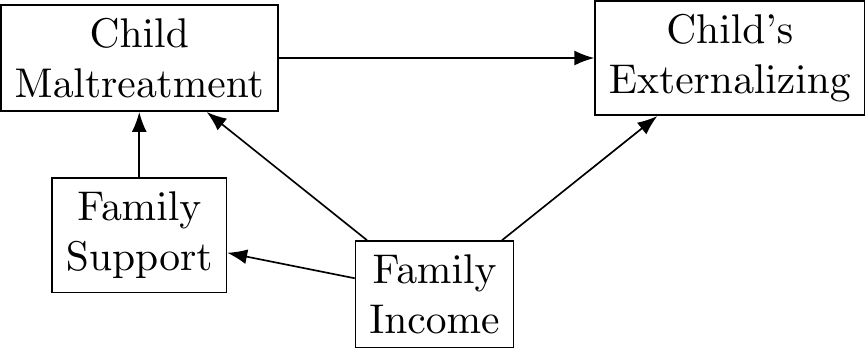
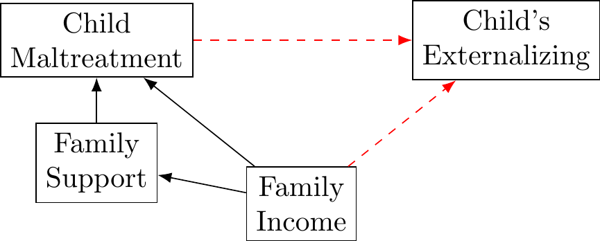

7.5 Logistic Regression: Empirical example with a Binomial (Bernoulli, binary) distributed outcome variable
In logistic regression, we are interested in how various predictors are related to the probability of a specific outcome \(Pr(Y_i = 1) = \pi_i\). Making use of the logit link function, the general equation for logistic regression is
\[logit(\pi_i) = \beta_{0} + \beta_{1}x_1 + ... + \beta_{q}x_q\]
Which after back transformation gives us … \[ Pr(Y_i = 1) = \pi_i = \frac{e^{\beta_{0} + \beta_{1}x_1 + ... + \beta_{q}x_q}}{1+e^{\beta_{0} + \beta_{1}x_1 + ... + \beta_{q}x_q}} \]
For the logistic regression example, let’s shift our focus on the outcome variable \(grad_i\), which indicates whether the mother graduated from high school. The variable ‘grad’ in dataframe ‘wiscsub’ equals 0 if the mother did not graduate high school, and 1 if the mother did graduate high school. Let’s start with the simplest model for predicting ‘grad,’ the intercept-only model. More specifically, we have
\[ logit(\pi_i) = b_0(1_i)\] where \(\pi_i = Pr(grad_i = 1)\).
We can use the glm() function to fit the model to the data
model9 <- glm(grad ~ 1,
family = "binomial",
data = wiscsub,
na.action = na.exclude)
summary(model9)##
## Call:
## glm(formula = grad ~ 1, family = "binomial", data = wiscsub,
## na.action = na.exclude)
##
## Deviance Residuals:
## Min 1Q Median 3Q Max
## -0.7149 -0.7149 -0.7149 -0.7149 1.7260
##
## Coefficients:
## Estimate Std. Error z value Pr(>|z|)
## (Intercept) -1.2340 0.1675 -7.365 1.77e-13 ***
## ---
## Signif. codes: 0 '***' 0.001 '**' 0.01 '*' 0.05 '.' 0.1 ' ' 1
##
## (Dispersion parameter for binomial family taken to be 1)
##
## Null deviance: 217.78 on 203 degrees of freedom
## Residual deviance: 217.78 on 203 degrees of freedom
## AIC: 219.78
##
## Number of Fisher Scoring iterations: 4The intercept, \(b_0\), reflects the expected log-odds of the outcome variable (log of the ratio of proportions for graduate vs. did not graduate).
Sometimes it is easier to communicate results in terms of probabilities, instead of odd. So we can use the inverse link function to get that: \[ Pr(grad_i = 1) = \pi_i = \frac{e^{b_0}}{1+e^{b_0}} \]
exp(-1.2340)/(1 + exp(-1.2340))## [1] 0.2254821The expected probability of the mother graduating is 0.2254821. Let’s confirm that the backward transformed parameter from this intercept-only logistic regression matches the expectation we get from the descriptives of the raw data.
mean(wiscsub$grad)## [1] 0.2254902The answers match, both indicate that the expected probability of mother having graduated from high school in this sample is about .225.
Ok, let’s include a predictor. Let’s include \(verb^{*}_{1i}\) such that
\[ logit(\pi_i) = b_0(1_i) + b_1(verb^{*}_{1i}) + \epsilon_i \] where \(\pi_i = Pr(grad_i = 1)\).
And now let’s fit the model
model10 <- glm(grad ~ 1 + verb1_star,
family = "binomial",
data = wiscsub,
na.action = na.exclude)
summary(model10)##
## Call:
## glm(formula = grad ~ 1 + verb1_star, family = "binomial", data = wiscsub,
## na.action = na.exclude)
##
## Deviance Residuals:
## Min 1Q Median 3Q Max
## -1.5030 -0.6956 -0.5529 -0.3288 2.2344
##
## Coefficients:
## Estimate Std. Error z value Pr(>|z|)
## (Intercept) -1.39038 0.18954 -7.336 2.2e-13 ***
## verb1_star 0.13681 0.03278 4.174 3.0e-05 ***
## ---
## Signif. codes: 0 '***' 0.001 '**' 0.01 '*' 0.05 '.' 0.1 ' ' 1
##
## (Dispersion parameter for binomial family taken to be 1)
##
## Null deviance: 217.78 on 203 degrees of freedom
## Residual deviance: 197.87 on 202 degrees of freedom
## AIC: 201.87
##
## Number of Fisher Scoring iterations: 4The parameter estimate \(b_0\) reflects the expected log-odds of a mother graduating for a child with an average Grade 1 verbal score. Using the inverse link function …
exp(-1.39038 )/(1+exp(-1.39038))## [1] 0.1993471We note that, for the average Grade 1 child (in this sample), there is a .2 probability of having a mother that graduated from high school.
Going back to the model parameters, the estimate for \(b_1\) indicates the expected difference of the log-odds of a mother graduating for a 1-point difference in their child’s Grade 1 verbal score. Therefore, we expect a 0.13681 difference in the log-odds of mothers graduating for a 1 point difference in children’s 1st grade verbal score.
Parameter estimates from a logistic regression are often reported in terms of ‘odds’ rather than ‘log-odds.’ To obtain parameters in odds units, we simply exponentiate the coefficients. Note that this is just one of the steps of the inverse link function (which would take us all the way to probability units). Therefore, we have
exp(coef(model10))## (Intercept) verb1_star
## 0.2489803 1.1466101And to obtain 95% confidence intervals for these coefficients, we use
exp(cbind(OR = coef(model10), confint(model10)))## Waiting for profiling to be done...## OR 2.5 % 97.5 %
## (Intercept) 0.2489803 0.1685443 0.3554798
## verb1_star 1.1466101 1.0776626 1.2262119Using these parameter estimates, we can say that the odds of a mother graduating is 0.2489 if her child had an average first grade verbal score. Also, for each 1-point difference in the child’s 1st grade verbal score we expect a 1.146 difference in the odds of the child’s mother graduating high school. Communicating results from logistic regression is always difficult, but translation to odds or probabilities can help tremendously. Do what you can to make it easy for your readers.
Here is our model for predicting the probability that the mother graduated:
\[ Pr(grad_i=1) = \pi_i = \frac{e^{-1.39038+0.13681(verb^{*}_{1i})}}{1+e^{-1.39038+0.13681(verb^{*}_{1i})}}\]
We can visualize the relation between 1st grade verbal scores and probability of mothers’ graduation in the original 0 to 1 scale.
ggplot(data=wiscsub,
aes(x=verb1_star,y=grad)) +
geom_point(alpha = .08, size = 10) +
xlab("1st Grade Verbal Score") +
ylab("Mothers' Graduation") +
theme_bw() +
stat_smooth(method = 'glm', method.args = list(family = "binomial"), se = TRUE)## `geom_smooth()` using formula 'y ~ x'
We can see that with higher 1st grade verbal scores, the probability of mothers having graduated is higher.
Notice how the density of the observations is visualized by manipulating the transparency (alpha) level of the data points. The predicted curve based on our model has of course a non-linear shape (however, if we were to plot the relationship between the variables with using the logit link, it would be a straight line).
Ok, let’s include another predictor. Let’s look at verbal score and gender.
\[ logit(\pi_i) = b_0 + b_1(verb^{*}_{1i}) + b_2(female_i) + b_3(verb^{*}_{1i})(female_i) \] where \(\pi_i = Pr(grad_i = 1)\).
model11 <- glm(grad ~ 1 + female + verb1_star + I(verb1_star*female) ,
family = "binomial",
data = wiscsub,
na.action = na.exclude)
summary(model11)##
## Call:
## glm(formula = grad ~ 1 + female + verb1_star + I(verb1_star *
## female), family = "binomial", data = wiscsub, na.action = na.exclude)
##
## Deviance Residuals:
## Min 1Q Median 3Q Max
## -1.4224 -0.6894 -0.5705 -0.2692 2.4419
##
## Coefficients:
## Estimate Std. Error z value Pr(>|z|)
## (Intercept) -1.38195 0.25825 -5.351 8.73e-08 ***
## female -0.07282 0.38885 -0.187 0.8514
## verb1_star 0.09119 0.04146 2.200 0.0278 *
## I(verb1_star * female) 0.11490 0.06987 1.644 0.1001
## ---
## Signif. codes: 0 '***' 0.001 '**' 0.01 '*' 0.05 '.' 0.1 ' ' 1
##
## (Dispersion parameter for binomial family taken to be 1)
##
## Null deviance: 217.78 on 203 degrees of freedom
## Residual deviance: 194.79 on 200 degrees of freedom
## AIC: 202.79
##
## Number of Fisher Scoring iterations: 5Parameters \(b_0\) and \(b_1\) describe the relation between \(verb^{*}_{1i}\) and \(grad_i\) for males, and \(b_0 + b_2\) and \(b_1 + b_3\) describe the relation for females. Note that neither \(b_2\) nor \(b_3\) are significantly different from zero, so boys and girls have about the same relation between 1st grade verbal scores and the number of years of mothers’ education.
We can see this first on the log-odds scale as
\[ logit(\pi_i) = -1.38195 + 0.09119(verb^{*}_{1i}) -0.07282(female_i)+ 0.11490 (verb^{*}_{1i})(female_i) \] where \(\pi_i = Pr(grad_i = 1)\).
Transformed to the probability (0 to 1) scale, this is
\[ grad_i = \frac{e^{-1.38195 + 0.09119(verb^{*}_{1i})+ 0.0162466(female_i)+ 0.11490 (verb^{*}_{1i})(female_i)}}{1+e^{-1.38195 + 0.09119(verb^{*}_{1i})+ 0.0162466(female_i)+ 0.11490 (verb^{*}_{1i})(female_i)}} \]
ggplot(data=wiscsub,
aes(x=verb1_star,y=grad, color = factor(female))) +
geom_point(alpha = .08, size = 10) +
xlab("1st Grade Verbal Score") +
ylab("Mothers' Graduation") +
guides(color=guide_legend(title="Female")) +
theme_bw() +
stat_smooth(method = 'glm', method.args = list(family = "binomial"), se = TRUE, fullrange = TRUE)## `geom_smooth()` using formula 'y ~ x'
So, in summary, fitting linear models to binary outcomes is very similar to fitting models to Gaussian outcomes. We use the logit link function to normalize the outcome variable, and then all of the parameter estimates are in terms of log-odds. Transformation back into the probability space may provide for easier interpretation.
What the equivalent of an R-square is, is not clear … Relevant info and discussion can be found in the following places -
http://statisticalhorizons.com/r2logistic
with general info on pseudo R-sq here http://statistics.ats.ucla.edu/stat/mult_pkg/faq/general/Psuedo_RSquareds.htm
and it looks like R-specifc implementation can be done with … Harrell’s rms package gives Nagalkerke’s R2 http://stats.stackexchange.com/questions/8511/how-to-calculate-pseudo-r2-from-rs-logistic-regression or for McFadden’s R2 the pR2() function in the pscl library (as noted in the second answer)